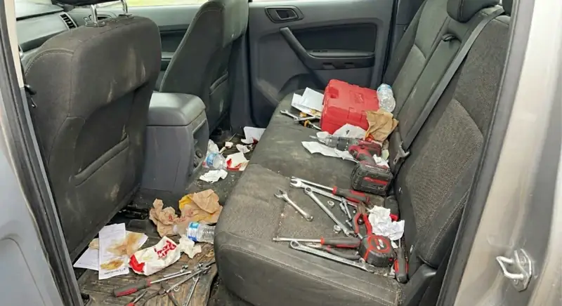
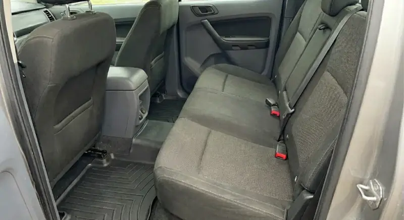
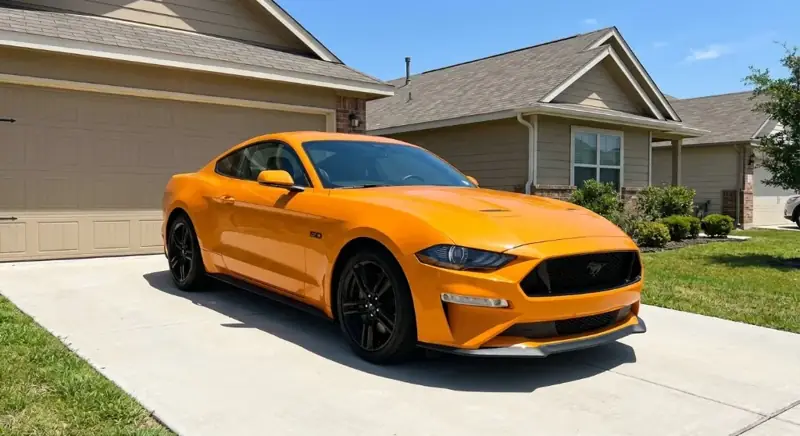
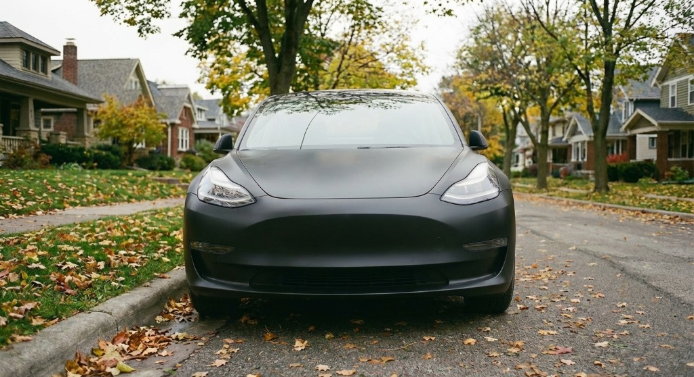

THE WORK / OUR GALLERY
Browse services ↗SEE THE
DIFFERENCE.
Real cars, real care. Take a closer look at the details that make every drive feel new again.

Cadillac Escalade
EXTERIOR DETAIL

Tesla
EXTERIOR FINISH

Front interior
CABIN CARE

Rear seating
INTERIOR DETAIL

Before interior care
BEFORE

After interior care
AFTER

Detail focus
THE FINER POINTS

Tesla details
EXTERIOR DETAILS
YOUR CAR COULD BE NEXT.